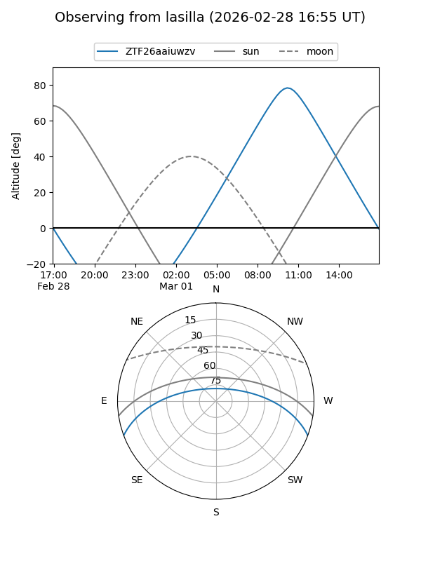
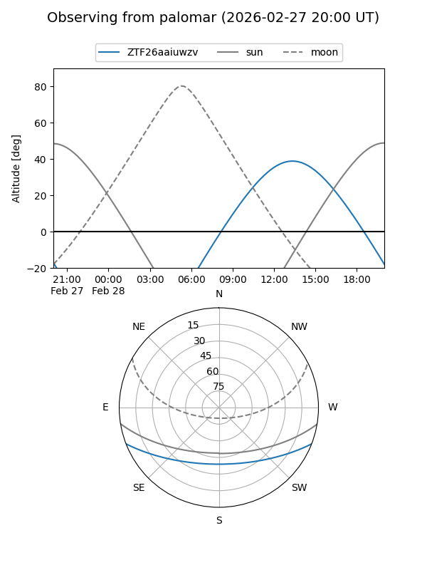

ZTF26aaiuwzv
Target ZTF26aaiuwzv at 2026-02-28 12:26
Aliases and brokers:
FINK: link
Lasair: link
ALeRCE: link
alt names
ZTF26aaiuwzv (ztf,fink_ztf)
Coordinates:
equatorial (ra, dec) = 241.2801,-17.66811
equatorial (HMS+DMS) = 16:05:07.21,-17:40:05.19
galactic (l, b) = (354.8525,+25.11234)
Flags:
Photometry:
last ztfg=19.09
1 ztfg detections
Lightcurve
Visibility


Additional plots